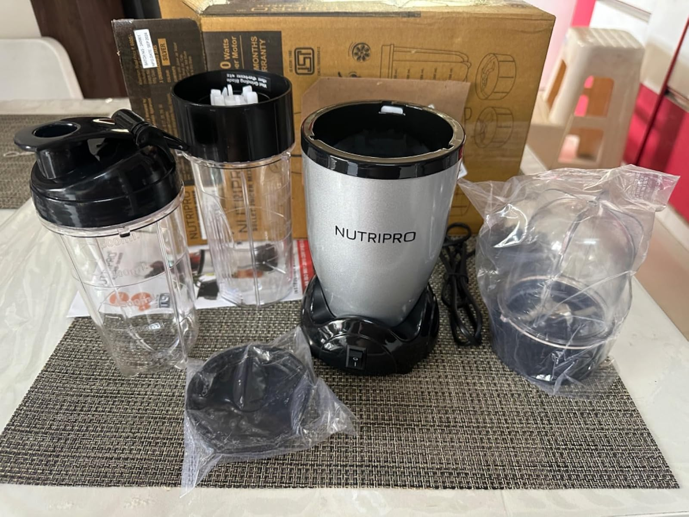

Nutripro Copper Juicer Mixer and Smoothie Maker - 500 Watts
Price: ₹1,649
For latest discounts, please click on "Buy Now"
Why you should BUY!
The Nutripro Copper Juicer Mixer and Smoothie Maker is a powerful and versatile kitchen appliance that allows you to make fresh juices, smoothies, and more with ease. With its 500-watt motor, it can handle a variety of fruits and vegetables, ensuring you get the most out of your produce. Its sleek copper design adds a touch of elegance to any kitchen. The Nutripro Juicer Mixer is easy to use and clean, making it a convenient addition to your daily routine. Enjoy healthy and delicious drinks at home with this must-have appliance.Rating: ★★★★☆ (4.2/5) - 14,711 ratings
How to USE
Using the Nutripro Copper Juicer Mixer and Smoothie Maker is simple and straightforward:
- Assemble the juicer mixer by attaching the appropriate blades and jars for your desired use.
- Prepare your ingredients by washing and cutting them into manageable pieces.
- Place the ingredients into the jar and secure the lid tightly.
- Select the appropriate speed setting using the control knob. You can choose from various speed options depending on the ingredients and desired consistency.
- Start the juicer mixer and let it process your ingredients. You may need to use the tamper to push down the ingredients for even blending.
- Once the processing is complete, turn off the juicer mixer and carefully remove the jar.
- Pour your fresh juice or smoothie into a glass and enjoy.
- Disassemble the juicer mixer and clean the parts thoroughly. Most parts are dishwasher safe for easy cleaning.
Enjoy your healthy and delicious drinks with the Nutripro Copper Juicer Mixer and Smoothie Maker!
Buy Now Go BackWhat people think !
"Customers appreciate the quality, value, and ease of use of this blender. They find it reliable, worth the price, and versatile for making various recipes. Many are pleased with its performance, compact size, and smoothie-making capabilities. However, some customers have differing opinions on its functionality."
Similar products
| Product | Image | Features | Price | Rating | Buy Now |
|---|---|---|---|---|---|
| Cookwell Nutri Blender | This complete kitchen machine offers all-in-one solution and performs four functions - those of a mixer, grinder, juicer and chopper Blender f | ₹2,099 | 4.1/5 (4,890) | Check | |
| Nutribullet Pro 900W mixer |  |
Includes 1-900W Motor Base, 1-709ml of tall cup, 1-532ml short cup with holder, 1-532ml short cup, 1-emulsifying blade, 1-lip ring, 1- flat blade, 2 lids, 1 pocket nutritionist, user book with recipe | ₹7,499 | 4.5/5 (2,398) | Check |
| Wonderchef Nutri-Blend Mixer | POWERFUL 100% FULL COPPER MOTOR: Grind the toughest chutneys and masalas with the 500 W, incredibly high speed of 22,000RPM copper motor - twice that of normal mixer-grinders | ₹2,499 | 3.9/5 (31,226) | Check |